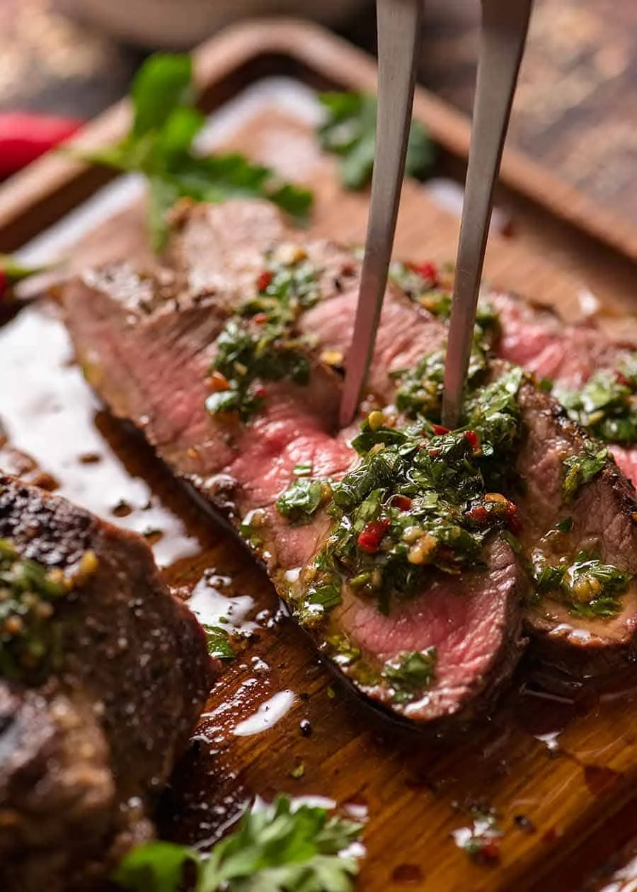

Chimichurri Steak

Description:
The best steak ever made.
Ingredients:
Sauce:
- 1 cup of fresh parsley leaves (tightly packed)
- 1 tbsp of fresh oregano leaves (tightly packed)
- 4 garlic cloves
- 2 teaspoons of red pepper flakes
- 1/4 cup of red wine vinegar
- 1/2 teaspoon of fine, iodized salt
- 1/2 cup of extra virgin olive oil
Steak:
- 1.4 lb skirt steak
- 1 tablespoon of vegetable oil
- 1/2 teaspoon of pink Himalayan salt
- 1/2 teaspoon of freshly ground black pepper
Steps:
- Take steak out of the fridge and let it sit outside for 30 minutes.
- Sprinkle steak with salt and pepper.
- Place parsley leaves, oregano leaves, garlic, and vinegar into
a food processor.Parsley should be finely chopped, not pureed.
- Transfer chopped food into a bowl and add olive oil, red pepper flakes,
and salt. Stir gently and let stand for at least 1 hour.
- Heat BBQ / skillet with vegetable oil over high heat until smoking.
- Cook steak for 2 minutes on each side for a medium rare finish
or 2.5 minutes for medium finish.
- Transfer the steak to a plate and cover loosely with aluminum foil.
Let stand for 5-10 minutes.
- Cut steak into thin slices against the grain. Serve Chimichurri sauce on the side.
Source:
https://www.recipetineats.com/skirt-steak-with-chimichurri-sauce/